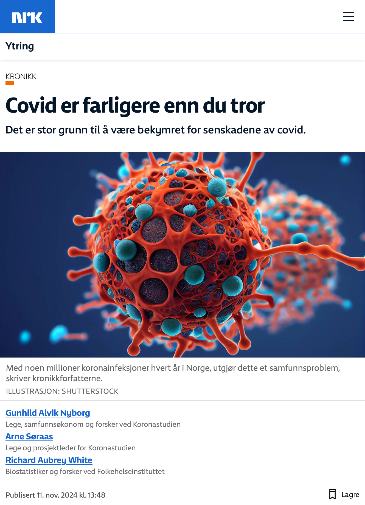

![]()

Da pandemien traff oss i 2020 visste vi lite om covid-19 og viruset som forårsaker denne helt nye sykdommen. Nå vet vi mye mer.
Det har vist seg at koronaviruset nesten utelukkende smitter gjennom luften. Hvis du ikke puster inn viruset, blir du ikke smittet. Derfor merker mange covid som forkjølelse og hoste. Men etter at viruset er kommet inn gjennom luftveiene, sprer det seg videre til hele kroppen.
Hva koronaviruset gjør med kroppen
Et virus består nesten bare av innpakket arvemateriale. For at viruset skal kunne formere seg, må det komme seg inn i kroppens celler. Viruset «snylter» på cellene våre for å lage mange nye kopier av seg selv.
«Skader kan ses på hjernen, også etter mild sykdom»
Koronaviruset har en ganske unik evne til å komme seg inn i mange ulike celletyper, inkludert cellene som danner innsiden av blodårene og immunceller, og skade dem. Derfor anses ikke covid å være en luftveisinfeksjon, men en såkalt systemisk, multiorgan infeksjonssykdom
Samtidig som vaksiner og tidligere smitte har gjort akutt covid mindre farlig, har bekymringene for virusets mange senskader økt.
Forskning viser at risikoen for senskader øker jo mer alvorlig den akutte sykdommen er, men det er likevel flest tilfeller av senskader etter mild sykdom, fordi dette er så vanlig.
Hos noen pasienter med long covid er det vist at viruset kan forbli inne i kroppens celler og organer i lang tid. De klarer ikke helt å bli kvitt det. Da er det ikke overraskende at ny forskning finner at gener som styrer kroppens evne til å bekjempe virus er knyttet til økt risiko for long covid.
«Plagene rammer mange, og er ofte vedvarende»
Det er også sett at mus som får injisert antistoffer fra folk med long covid, får de symptomene som pasientene har. Det er derfor på høy tid at vi slutter å psykologisere disse plagene.
Øker risikoen for mange helseplager
Det er rapportert skade på ti ulike organsystemer etter covid. Senskader etter covid er altså mer enn slitenhet og tung pust. Kognitive plager som «hjernetåke», nedsatt hukommelse, tempo og konsentrasjonsevne, og redusert evne til sammensatte handlinger er de symptomene som oftest rapporteres etter covid, og skader kan ses på hjernen ved MR, også etter mild sykdom.
Det er bekymringsfullt at store studier, inkludert den norske Koronastudien, finner at disse plagene rammer mange, og er ofte vedvarende.
Risikoen for å få en ny, helt annen sykdom, som diabetes type 1 og type 2 eller en infeksjonssykdom, og risikoen for å dø av alle årsaker, er også økt i flere år etter covid. Covid er funnet å være en egen risikofaktor for hjerte- og karsykdom, også hos tidligere friske. Disse sykdommene er også forbundet med økt behov for helsetjenester.
«Det er flest tilfeller av senskader etter mild sykdom»
Økt press på helsevesenet og trygdevesenet
Selv om risikoen for senskader ble noe lavere etter at omikron kom og folk ble vaksinert, ser man fortsatt i studier med kontrollgrupper at 3 prosent eller mer får helseplager av varierende grad etter gjennomgått covid. Hver infeksjon innebærer en økt risiko.
Så lenge vi ikke har mer effektive vaksiner eller medisinske behandlinger, kan vi derfor anta at antall nordmenn som har problemer med hukommelse, konsentrasjonsevne og evnen til å utføre komplekse oppgaver, vil øke i årene fremover. Med noen millioner koronainfeksjoner hvert år i Norge, utgjør dette et samfunnsproblem.
Når så få tester seg, vet folk ofte ikke at de har hatt covid. Samtidig kan altså senskader dukke opp i form av annen sykdom, lenge etter at vi føler oss friske.
I tillegg bruker allmennlegene i Norge et kodesystem for diagnoser som mangler en egen kode for senskader etter covid. Derfor vil mye av den økte syke- og dødeligheten som følger etter covid, bli registrert under helt andre diagnoser, som A04 (utmattelse) eller P29 (som inkluderer slitenhet). P29 sorterer under «lettere psykiske lidelser».
Long covid er trolig årsak til et stort antall sykmeldinger med disse diagnosene, som vi vet er økt mye de siste to år.
«Det er rapportert skade på ti ulike organsystemer»
Vi må forvente flere sykmeldte, et mer belastet helsevesen og kanskje høyere overdødelighet også i tiden fremover, slik vi har sett siden myndighetene sluttet å begrense smittespredningen i begynnelsen av 2022.
Selv om antallet som blir alvorlig syke og dør av akutt covid synker, er altså sykdommen en driver bak denne utviklingen.
Hvordan forebygge?
For det første bør alle som kan ha covid, teste seg og unngå å smitte andre ved å holde seg hjemme hvis testen er positiv.
Det er vist at vaksinene beskytter mot senskader, inkludert skader på hjerte-karsystemet, og den økte risikoen for sykdom og død. Senskader kan ramme alle aldersgrupper.
Vaksinene beskytter alle aldersgrupper, har få bivirkninger, og er godkjent for alle over seks måneder. Derfor bør alle tilbys grunnvaksinasjon og boostere hver gang det kommer nye, oppdaterte covid-vaksiner etter tilpassede opplegg for ulike grupper, slik amerikanske helsemyndigheter anbefaler.
«Det er på høy tid at vi slutter å psykologisere disse plagene»
Men beskyttelsen fra vaksinasjon er ikke fullgod, og effekten faller raskt etter et halvt års tid. Den eneste sikre måten å forebygge senskader etter covid er per i dag å unngå å bli smittet.
Siden covid smitter gjennom luftveiene, blir vi ikke smittet hvis det ikke er viruspartikler i luften vi puster inn. Et munnbind som effektivt hindrer partiklene å nå frem til nese og munn, gir derfor god beskyttelse.
Det er lurt å bruke munnbind ved høy smitterisiko, som når det er mye smitte i omløp og man er innendørs med mange andre, eller om noen er forkjølet.
Bedring av inneklima kan også redusere antall syke. Norge bør satse på å bedre ventilasjonen innendørs og installere luftrensere i skoler, offentlige bygg og arbeidsplasser, slik andre land gjør. Dette er vist å gi færre infeksjoner hos barnehage- og skolebarn, redusert sykefravær hos foreldre og ansatte, og det kan spare penger og øke livskvaliteten.
Å få covid annethvert år er bedre for helsen din enn å få covid to ganger hvert år. For hvert smittetilfelle vi forebygger, er det også færre som smitter videre. Derfor er slike forebyggende, enkle smitteverntiltak mer effektive enn mange tror, selv om de ikke er perfekte. De kan trolig spare samfunnet for store summer.
Richard Aubrey White er forsker ved Folkehelseinstituttet, men skriver ikke på vegne av arbeidsgiveren.